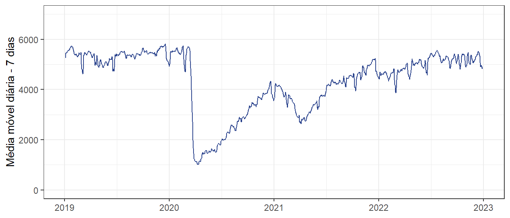

3 Características do SISCEAB
O SISCEAB compreende uma área extensa, revelando características singulares entre as Organizações Regionais do DECEA em termos de:
- Organização dos Serviços de Tráfego Aéreo (ATS);
- Tipos de órgãos ATS;
- Características do sistema ATM;
- Perfil atual e futuro da demanda;
- Efetivo de Controlador de Tráfego Aéreo (ATCO);
- Fatores meteorológicos; e
- Projetos no SISCEAB.
Tais particularidades são abordadas ao longo deste capítulo em face da influência que esses fatores têm nos indicadores de performance ATM.
As características dos aeródromos, das TMA e das FIR, bem como suas respectivas complexidades e carga de trabalho associada, podem indicar a necessidade de alocar um efetivo maior de ATCO em determinados órgãos de controle, independentemente do tamanho da área geográfica sob sua jurisdição.

Imagem teste
A quantidade de movimentos anuais dos principais aeroportos, das TWR, dos APP e dos ACC pode ser conferida no Anuário Estatístico de Tráfego Aéreo, documento produzido pelo CGNA e disponível em http://portal.cgna.decea.mil.br, na aba Recursos, ou em http://performance.decea.mil.br/ , na aba Produtos.
3.2 Órgãos ATS – ACC / APP / TWR / AFIS
Os órgãos ATS prestam os Serviços de Tráfego Aéreo, que incluem os Serviços de Controle de Tráfego Aéreo, de Informação de Voo e de Alerta. Popularmente, o tema controle de tráfego aéreo é associado à figura de uma torre de controle (TWR).
Entretanto, a TWR é uma das engrenagens do grande sistema que compõe o SISCEAB, no qual, também estão envolvidos órgãos de controle como os Centros de Controle de Área (ACC) e os Controles de Aproximação (APP). Adicionalmente, existem as Rádios que, por sua vez, são órgãos prestadores do Serviço de Informação de Voo de Aeródromo (AFIS) que complementam os órgãos provedores dos Serviços de Tráfego Aéreo (ATS).
Cada um desses órgãos ATS possui a sua respectiva área de jurisdição, regulamentos inerentes ao serviço prestado e equipamentos adequados para o provimento de suas atribuições. O ANEXO A apresenta os Regionais e os respectivos órgãos ATS sob sua jurisdição.
3.3 Centro de Controle de Área – ACC
O ACC é um órgão de controle de tráfego aéreo encarregado de prestar os Serviços ATS às aeronaves que evoluem na Região de Informação de Voo (FIR). A FIR é uma porção do espaço aéreo com grandes dimensões em que ocorrem as fases de subida, descida, sobrevoo e cruzamento entre diferentes aeronaves, com performances distintas e em níveis de voo variados.
Os ACC brasileiros trabalham ininterruptamente com equipes de controladores de tráfego aéreo, militares especialistas da Aeronáutica que se revezam em turnos específicos de serviço.
Os ACC dispõem de modernas tecnologias para o provimento seguro, ordenado e rápido do tráfego aéreo. Dentre esses recursos, destacam-se:
- SAGITARIO – Sistema Avançado de Gerenciamento de Informações de Tráfego Aéreo e Relatório de Interesse Operacional;
- CPDLC – Comunicações por Enlace de Dados Controlador-Piloto; e
- ADS-C – Vigilância Dependente Automática – Contrato.
3.4 Controle de Aproximação - APP
O APP é um órgão de controle de tráfego aéreo encarregado de prestar os serviços requeridos pelas aeronaves partindo e chegando nos aeroportos situados no interior de uma área de controle terminal.
No Brasil, os APP contam com equipes de ATCO, compostas por militares especialistas da Aeronáutica, da Marinha do Brasil ou do Exército Brasileiro. Adicionalmente, alguns APP são integrados por profissionais civis, oriundos de outros Provedores de Serviços de Navegação Aérea (PSNA) como, por exemplo, a NAV Brasil e a INFRAERO. Mesmo com entidades externas ao Comando da Aeronáutica , todo o processo de formação de controladores bem como a gestão de licenças e habilitações é realizada pelo DECEA.
Os APP brasileiros dispõem de modernas tecnologias para o provimento seguro, ordenado e rápido do tráfego aéreo. Dentre esses recursos, destacam-se:
- SAGITARIO (sistema de visualização dos dados radar);
- AMAN (Sistema de Gerenciamento de Chegada);
- SITTI (Central de áudio/telefonia integrada); e
- ADS-B (Vigilância Dependente Automática por Radiodifusão).
3.5 Torre de Controle de Aeródromo - TWR
A TWR é um órgão de controle de tráfego aéreo situada nos aeroportos de maior movimento.
De modo geral, a TWR é responsável por prestar os serviços requeridos pelas aeronaves apenas durante as fases de decolagem e pouso em um aeródromo. Incluem-se entre esses serviços o controle no solo de viaturas e pessoas na área de manobras e, quando necessário, o controle dos voos no circuito de tráfego visual do aeródromo.
Da mesma forma que ocorre com os APP, as TWR do Brasil também contam com equipes de ATCO que podem ser especialistas da Aeronáutica ou profissionais de entidades externas.
Adicionalmente, a incorporação de novas tecnologias ATM, como, por exemplo, o TATIC-TWR, o DCL (autorização de tráfego via enlace de dados) e o radar de solo, permitem otimizar a segurança, a eficiência e o gerenciamento em TWR de elevado fluxo de aeronaves.
Alinhando recursos tecnológicos atuais com práticas inovadoras, o DECEA implementou, no aeródromo de Santa Cruz, a primeira Torre Digital (D-TWR) do SISCEAB.
Na operação da D-TWR Santa Cruz, a visualização tradicional do ATCO acerca do cenário operacional foi substituída pela visualização de um sistema de vigilância, composto por câmeras de alta resolução e monitores, que proporcionam aos controladores uma visão panorâmica do aeródromo e de sua vizinhança.
A primeira D-TWR brasileira foi mais um grande passo à modernização da infraestrutura aeroportuária nacional, permitindo fomentar experiências e conhecimentos para futuras aplicações nos demais aeródromos do país.
Nos aeroportos cujo volume de operações aéreas é considerado baixo, não existe necessidade de instalação de uma TWR. Nesses casos, é disponibilizado o AFIS, cujo serviço é prestado por Operadores de Estação Aeronáutica.
No Brasil, as estações aeronáuticas são identificadas como Rádios e prestam o Serviço de Informação de Voo de Aeródromo (AFIS) visando proporcionar informações relevantes aos aeronavegantes.
Eventualmente, alguns APP ou TWR, em determinados horários e de acordo com critérios estabelecidos, podem prestar o AFIS. Isso permite modular o serviço prestado em função da demanda existente, racionalizando recursos, sem prejuízo à segurança operacional.
A partir de 2016, foram viabilizados os órgãos AFIS remotos (R-AFIS) em aeroportos de baixo movimento, sendo o serviço prestado de forma remota à localidade. Atualmente, as localidades de Fernando de Noronha (na FIR-RE), Oiapoque e Vilhena (na FIR-AZ), Uruguaiana e Corumbá (na FIR-CW) operam na configuração R-AFIS.
As Rádios, remotas ou não, contam com equipes de Operadores de Estação Aeronáutica, que podem ser militares ou civis, da Aeronáutica ou de outras organizações.
3.6 AFIS
No Brasil, as estações aeronáuticas são identificadas como Rádios e prestam o Serviço de Informação de Voo de Aeródromo (AFIS) visando proporcionar informações relevantes aos aeronavegantes.
Eventualmente, alguns APP ou TWR, em determinados horários e de acordo com critérios estabelecidos, podem prestar o AFIS. Isso permite modular o serviço prestado em função da demanda existente, racionalizando recursos, sem prejuízo à segurança operacional.
A partir de 2016, foram viabilizados os órgãos AFIS remotos (R-AFIS) em aeroportos de baixo movimento, sendo o serviço prestado de forma remota à localidade. Atualmente, as localidades de Fernando de Noronha (na FIR-RE), Oiapoque e Vilhena (na FIR-AZ), Uruguaiana e Corumbá (na FIR-CW) operam na configuração R-AFIS.
As Rádios, remotas ou não, contam com equipes de Operadores de Estação Aeronáutica, que podem ser militares ou civis, da Aeronáutica ou de outras organizações.
3.7 Organizações Regionais do DECEA
O Quadro 5 apresenta as principais características do sistema ATM brasileiro, que permite identificar o cenário de cada Organização Regional.

Imagem teste
NOTA 1: A metodologia que mede a área geográfica de cada Regional sofreu uma pequena modificação: no Relatório de 2021, se utilizou o critério da jurisdição, que excluía a área do CRCEA-SE das FIR sobrejacentes. Nesta edição, foi utilizada a delimitação geográfica de cada FIR. Assim, a área do CRCEA-SE deixa de ser agregada no cômputo geral do SISCEAB, que é igual ao somatório de suas cinco FIR.
NOTA 2: Em 2022, houve redimensionamento das FIR Amazônica, Atlântico e Recife. Em 16 de junho, parte da FIR-AZ passou para a FIR-AO. Em 1º de dezembro de 2022, parte da FIR-AO passou para a FIR-RE.
NOTA 3: As informações relativas aos ATCO foram extraídas do Sistema de Gestão de Pessoal Operacional (SGPO), com base nos detentores de licença de ATCO em atividade, sendo incluídos os graduados militares BCT (da ativa ou da reserva), estagiários, ATCO de Defesa Aérea, oficiais CTA e civis DACTA contabilizados em cada Regional. No efetivo total do SISCEAB e no percentual operacional, além dos ATCO já informados nos Regionais, são considerados também os militares alocados em unidades fora dos Regionais, mas não são considerados aqueles em formação na Escola de Especialistas de Aeronáutica (EEAR). Foram incluídas informações específicas sobre operadores de outras Forças, da NAVBRASIL e demais PSNA.
NOTA 4: Em relação aos voos controlados, a quantidade de voos foi calculada por FIR/Regional, com base no número de movimentos de 1º/01/2022 a 31/12/2022 constantes no SETA Millenium, excluindo-se os movimentos repetidos nas duas bases (das localidades de origem e de destino).
NOTA 5: Os dados descritos na NOTA 4 foram utilizados para o cálculo da densidade, em número de voos/km2. A partir daí, foi considerada a inclusão da área da FIR-AO, representada com os valores entre parênteses (0,07 para o SISCEAB e 0,03 para o CINDACTA III). Assim, os valores sem os parênteses representam a densidade do SISCEAB e do CINDACTA III desconsiderando a área da FIR-AO.
NOTA 6: A produtividade foi calculada na grandeza de mil voos por ATCO operacional.
NOTA 7: O share da aviação geral indica a participação deste segmento em relação ao total de movimentos.
NOTA 8: Em relação ao número de ACC, APP, TWR e AFIS, as informações foram obtidas nas publicações AIP-Brasil, ROTAER e no Portal AISWEB, do DECEA, conforme o ANEXO A.
NOTA 9: A quantidade de aeródromos foi contabilizada de acordo com o site de performance do DECEA. Para o cálculo do quantitativo de aeródromos sem órgãos ATS foi considerado o total de aeródromos que não possuem TWR, D-TWR, AFIS e R-AFIS.
3.8 Caracterização da demanda
O objetivo geral dos serviços de tráfego aéreo é o fornecimento de um fluxo de tráfego aéreo seguro, ordenado e eficiente. Para fins de comparações operacionais, é importante ter um bom entendimento da demanda nos principais aeroportos do SISCEAB, do ranking dos aeroportos, da participação de movimentos por FIR, das rotas mais voadas pela aviação comercial, da densidade do tráfego e como a frota é composta, de acordo com a classificação das aeronaves em leve, média ou pesada.
A caracterização da demanda de tráfego aéreo no Brasil é detalhada nos tópicos a seguir.

Imagem teste
3.8.1 Demanda nos principais aeroportos do SISCEAB
Em 2022, a demanda nos principais aeroportos brasileiros apresentou números muito próximos ao volume de operações aéreas observado em 2019, ano de referência pré-pandemia. Nessa seção, são considerados os 34 principais aeroportos, contabilizando as respectivas operações de pouso e decolagem.
Nesse sentido, a Figura 3 apresenta a média móvel semanal de pousos e decolagens realizados nos principais aeroportos do SISCEAB nos últimos anos. Em 2019, foi observada pouca variação ao longo do ano, com uma média em torno de 5.500 operações de pousos e decolagens por dia. A partir de março de 2020, observa-se uma queda significativa na média móvel em função da pandemia da COVID-19. No ano seguinte, apesar da recuperação inicial, os meses de março, abril e maio mostraram novas contrações da demanda em virtude da segunda onda da COVID-19.
Ao fim do ano passado, a média móvel de operações nos principais aeroportos estava acima de 5.000 movimentos por dia, caracterizando, assim, a recuperação da demanda nacional e a retomada dos voos no cenário pós-covid (o “novo normal”).

3.8.1.1 Aviação comercial doméstica
A Erro! Autoreferência de indicador não válida. apresenta o volume de operações de pouso e decolagem nos principais aeroportos brasileiros e a variação observada ao comparar 2022 com 2019. Pode-se verificar que a demanda comercial doméstica operou acima de 90% do volume de 2019 de maio a dezembro de 2022, sendo maio o mês com o melhor desempenho (apenas 2,9% abaixo do volume de 2019).
A aviação comercial doméstica nos principais aeroportos brasileiros operou com 89,8% do volume pré-pandemia (10,2% abaixo do volume de 2019).
3.8.1.2 Aviação comercial internacional
As operações de transporte aéreo internacional, por sua vez, apresentaram recuperação superior a 80% em relação a 2019 pela primeira vez, desde o início da pandemia da COVID-19, nos últimos três meses de 2022.

Entre os meses de outubro e dezembro de 2022, as operações aéreas internacionais apresentaram o seguinte desempenho: outubro fechou com menos 17,7%, novembro com menos 14,9% e dezembro com menos 15,3%, conforme indicado na Figura 5. A aviação comercial internacional nos principais aeroportos brasileiros operou com 68,6% do volume pré-pandemia (31,4% abaixo do volume de 2019).
3.8.1.3 Aviação comercial geral
Desde o início da pandemia em 2020, a aviação geral apresentou maior resiliência aos efeitos restritivos das medidas sanitárias impostas pelo Estado e, na mesma medida, maior velocidade de recuperação das operações aéreas. Em 2022, apenas o mês de janeiro apresentou desempenho inferior ao de 2019. Nos demais meses do ano, as operações da Aviação Geral registraram volume igual ou superior ao de 2019, tendo contribuído significativamente para a retomada da demanda nacional.

A Figura 6 apresenta o volume de operações de pouso e decolagem deste segmento da aviação nos principais aeródromos brasileiros: com destaque para fevereiro, com volume 18,7% superior ao de 2019, e setembro, com volume 18,1% superior ao de 2019.
As operações da aviação geral nos principais aeroportos brasileiros em 2022 alcançou um desempenho 9,5% acima do volume pré-pandemia.
- No TOTAL de operações aéreas do SISCEAB, considerando os voos e sobrevoos realizados no espaço aéreo brasileiro, o ano de 2022 fechou 5,2% acima do volume registrado em 2019;
- Considerando as operações de pouso e decolagem nos 34 principais aeroportos brasileiros, os segmentos da Aviação Comercial Doméstica e Internacional fecharam 2022 10,2% e 31,4% abaixo do volume registrado em 2019, respectivamente; e
- A Aviação Geral, considerando as operações de pouso e decolagem nos 34 principais aeroportos brasileiros, fechou 2022 9,5% acima do volume registrado em 2019.
3.8.2 Ranking dos aeroportos
O ranking dos aeroportos leva em consideração o número de pousos e decolagens registrados ao longo de um ano nos aeroportos brasileiros. Em 2022, destacaram-se com um aumento significativo no número de operações os aeroportos de Congonhas e Santos Dumont. Em Congonhas, o volume de operações aumentou em 55% em relação ao ano anterior, enquanto no Santos Dumont, houve um aumento de 49,4% nas operações de pouso e decolagem.
A Figura 7 apresenta o Ranking dos quarenta principais aeródromos brasileiros, indicando a variação anual dessas operações entre 2022 e 2021.
O Aeroporto de Navegantes, aparece em 27º no ranking, com a maior variação em comparação ao ano anterior: 205,9% de crescimento. Em seguida, outro aeroporto da Região Sul: Curitiba, que aparece em 13º no ranking, com crescimento de 60,5% em relação a 2021. Por fim, Congonhas, com a terceira maior variação, registrando crescimento de 55% em 2022, em comparação a 2021.
Dos aeródromos elencados, apenas cinco registraram volume de operações inferior a 2021: Ponta Grossa (-20,2%), Jundiaí (-7,3%), Farol de São Tomé (-6,1%), Bacacheri (-5,1%) e, por fim, Pirassununga (-3,3%) - todos com vocação para aeronaves dos segmentos de aviação geral e militar.
Imagem teste
3.8.3 Participação de movimentos por FIR
Ao se analisar a participação dos três segmentos de aviação (comercial, geral e militar) nas FIR brasileiras entre 2020 e 2022, é possível identificar um crescimento da participação da aviação comercial nas FIR continentais. Apenas a FIR-AO apresentou menor variação nesse share, devido à característica da sua demanda, essencialmente de aviação comercial internacional.

Imagem teste
Com a retomada da participação dos voos comerciais, a aviação geral manteve-se, em média, com tendência de queda no share, conforme indicado na Figura 8.
Quanto aos movimentos por FIR, é possível dividir as cinco FIR brasileiras em dois grupos: de um lado, as FIR Amazônica, Brasília e Recife, que apresentaram volume de operações aéreas superiores ao volume de 2019; e, por outro lado, as FIR Curitiba e Atlântico, que ainda operam com volume aquém ao observado no período pré-pandemia.
A Figura 9 detalha os movimentos de tráfego aéreo por FIR brasileira, apresentando a variação mensal observada e, também, a variação do total anual em comparação ao ano de 2019.
A FIR Brasília se destaca com volume bem superior às demais FIR, representado no gráfico pela distância entre a linha amarela e as outras linhas abaixo. Fechando 2022 com um total de 564.324 operações aéreas, a FIR-BS obteve um movimento 12,1% superior ao de 2019.
Com a implementação da nova circulação na TMA-SP, em maio de 2021, um importante fluxo para Guarulhos, que era transferido pelo ACC-CW diretamente para o APP-SP, passou a receber o serviço também do ACC-BS, que, então, os transferem ao APP-SP. Adicionalmente, outro fluxo importante, que antes seguia via FIR-CW e APP-RJ, com as alterações no espaço aéreo da Região Rio (setorização vertical), passou a transitar via ACC-BS, a rota mais curta. Esses dois “novos” fluxos contribuíram para o aumento do volume de aeronaves que evoluíram pela FIR-BS em 2022.
A FIR Atlântico, por sua vez, apresenta um volume de operações aéreas bem inferior às demais FIR, representado no gráfico pela distância entre a linha roxa e as demais linhas acima. Fechando 2022 com um total de 41.709 operações aéreas, a FIR-AO obteve um movimento 25,3% inferior ao de 2019. Com um fluxo exclusivamente composto por voos internacionais, a FIR-AO ainda sofre com os efeitos da pandemia na retomada da aviação comercial internacional.
A FIR Curitiba também apresenta dificuldades na recuperação das operações aéreas, fechando 2022 com um total de 370.712 operações aéreas, 21,2% abaixo de 2019. A FIR Amazônica, ainda que apresente um volume menor que as demais FIR continentais, obteve uma importante recuperação, fechando 2022 com 311.837 operações aéreas, 17,1% acima do total de 2019. Por fim, a FIR Recife apresentou resultado ligeiramente superior (2,7%) ao de 2019, com 327.980 movimentos.
Vale a pena ressaltar que o total de movimentos do SISCEAB não equivale à soma do total de movimentos das FIR, uma vez que um voo específico pode passar por mais de uma FIR e, desta forma, seria contabilizado mais de uma vez. A metodologia utilizada pelo DECEA exclui a duplicidade dos voos que transitarem em mais de uma FIR. Além disso, os voos realizados exclusivamente na área do CRCEA-SE (por exemplo, voos da ponte aérea SBRJ-SBSP) não são computados para nenhuma das FIR sobrejacentes.
3.8.4 Rotas mais voadas pela aviação comercial
A Figura 10 apresenta as vinte rotas mais voadas pela aviação comercial no espaço aéreo brasileiro em 2022 . Destaca-se que houve um aumento significativo no último ano de rotas envolvendo o aeroporto de Congonhas, cuja participação passou de seis para dez rotas entre as vinte mais movimentadas do país. Guarulhos, que se destacou como o aeroporto com mais participações no ranking de 2021, reduziu de doze para oito rotas no ranking de 2022.
Com isso, Congonhas e Guarulhos mantiveram seu predomínio no ranking das rotas mais voadas no SISCEAB, totalizando dezoito participações em 2022, mesmo índice do ano anterior. Respectivamente em 15º e 16º lugares no ranking de 2022, apenas os trechos SBRJ-SBBR e SBBR-SBRJ não incluem um dos dois principais aeroportos da TMA-SP entre os pares de cidade mais voados.

A ponte aérea Rio-São Paulo, que une os aeroportos de Santos Dumont e Congonhas, segue com as rotas mais voadas no país e que mais cresceram na comparação com o ano anterior: em 2022, foram 14.708 voos no sentido São Paulo (aumento de 78,2% em relação a 2021) e 14.640 no sentido Rio (aumento de 77,3% em relação a 2021).
As rotas entre Congonhas e Porto Alegre, que sequer apareciam no ranking de 2021, dobraram de movimento em 2022, totalizando 6.349 voos no sentido Porto Alegre e 6.325 voos no sentido São Paulo, ocupando os terceiro e quarto lugares do ranking.
Todas as vinte rotas do ranking apresentaram crescimento em 2022, na comparação com o ano anterior. Vale destacar que as oito primeiras rotas do ranking, conectando o aeroporto de Congonhas aos aeroportos de Santos Dumont, Porto Alegre, Confins e Brasília, tiveram crescimento acima de 70% em comparação a 2021.
3.8.5 Densidade do tráfego aéreo
A densidade do tráfego aéreo nacional representa a concentração de demanda no espaço aéreo. O cálculo leva em consideração a quantidade de voos controlados no ano em função do tamanho da área analisada (em km2).
Os dados apresentados na Figura 11 não levaram em consideração a área da FIR-AO ao calcular a densidade do CINDACTA III e do SISCEAB.

A complexidade do setor de controle e a carga de trabalho (workload) do ATCO impactam diretamente a densidade do respectivo espaço aéreo. Em regra, áreas menos complexas suportam um número maior de voos (capacidade declarada) do que aquelas com maior complexidade. Quanto maior a densidade, maior o número de setores ATC necessários no espaço aéreo e maior a necessidade de manter os setores ATC desagrupados.
O CRCEA-SE é o Regional com jurisdição sobre a área com a maior densidade do espaço aéreo brasileiro: responsável pelas TMA Rio de Janeiro e São Paulo, áreas muito menores que as FIR brasileiras e que concentram o maior fluxo de tráfego aéreo do país.
3.8.6 Composição da frota
A OACI publicou no Doc 4444 (Procedimentos para Serviços de Navegação Aérea) os critérios de categorização das aeronaves para fins de separação devido à esteira de turbulência, resumidos na figura seguinte.
Imagem teste
A composição da frota é responsável pela formação do “mix de aeronaves”, um fator significativo na determinação da capacidade aeroportuária.
Aeródromos com uma composição heterogênea de aeronaves podem criar um cenário que torna inviável o uso da separação mínima entre os pousos sucessivos, especialmente se houver alta frequência de aeronaves com tempos maiores de ocupação de pista ou de aeronaves pesadas (H e J), que exigem maiores separações na aproximação final devido à esteira de turbulência.
A separação mínima entre aeronaves na aproximação final depende de vários fatores, como o tipo de aeronave, as condições meteorológicas, o espaçamento de pista disponível e o procedimento de pouso utilizado. Em geral, a separação mínima entre duas aeronaves de performance semelhantes que estão realizando pousos consecutivos na mesma pista é de dois a três minutos ou cerca de 5 a 6 milhas náuticas (NM) de distância, mas as regras exatas variam de acordo com o contexto e a situação específica.
A Figura 13 mostra a participação das categorias de aeronaves nos principais aeródromos brasileiros, em 2022. Nos aeroportos com maior frequência de voos da aviação comercial, verifica-se um mix de aeronaves formado majoritariamente pela categoria média (Confins, Campinas e Guarulhos, por exemplo). Nos aeródromos com maior participação de voos dos segmentos militar e geral, o mix é formado especialmente por aeronaves de categoria leve (Campo de Marte, Pampulha, São José dos Campos e Jacarepaguá, entre outros).

Imagem teste
3.8.7 Previsão de demanda
Com o objetivo de contribuir para o planejamento ATM e a tomada de decisões gerenciais do DECEA e das organizações subordinadas, as previsões de demanda anual e quinquenal, bem como as previsões de demanda para os principais aeroportos, são disponibilizadas e atualizadas regularmente pelo CGNA . A previsão anual poderá sofrer atualizações mensais no portal, enquanto a previsão quinquenal (para os próximos cinco anos) é atualizada uma vez por ano, sempre no mês de janeiro.
A previsão quinquenal publicada no último Relatório de Performance considerava três cenários para 2022: no cenário pessimista, eram esperados1.472.083 movimentos; no realista, 1.517.744; e, no cenário otimista, 1.672.091 movimentos. No entanto, 2022 registrou um total de 1.677.760 movimentos, sendo superada a previsão otimista em 5.669 movimentos e fechando o ano 5,2% acima do volume de tráfego aéreo registrado em 2019.
Esse resultado positivo pode ser associado, entre outras causas, à elevação de demanda da aviação geral, que superou o resultado de 2019 durante quase todos os meses de 2022, com exceção apenas do mês de janeiro (-5%).
Para 2023, a previsão quinquenal considera novamente três possíveis cenários até 2027, e a demanda nacional deve operar entre 5,8% (cenário pessimista) e 15,2% (cenário otimista) acima de 2019, conforme indica a Figura 14: são esperados 1.686.149 movimentos no cenário pessimista; 1.761.648 movimentos no realista; e 1.837.147, no cenário otimista.

Imagem teste
Vale ressaltar que as previsões de demanda podem ser afetadas, positiva ou negativamente, pelo desempenho da economia nacional, uma das variáveis analisadas pelo CGNA. Segundo estimativas do Banco Mundial , o Produto Interno Bruto brasileiro cresceu 3,0% em 2022 e, para 2023, espera-se crescimento de 0,8%.
A FIR Brasília, por sua vez, registrou em 2022 um volume 12,4% acima do movimento observado em 2019. Além do crescimento da aviação geral e da recuperação dos principais aeroportos, parte do fluxo do Nordeste que se dirigia à TMA-SP pela área do Rio de Janeiro passou a transitar pela FIR-BS. Além disso, com a implementação da nova TMA São Paulo em 2021, o fluxo do sul para Guarulhos foi deslocado para entrar pelo setor BS-17 da FIR Brasília, ao noroeste da TMA-SP.

Imagem teste
A previsão referente à FIR Curitiba indica que o movimento observado em 2019 deve atingir o mesmo patamar apenas no ano de 2024. Caso a versão otimista prevaleça, essa recuperação poderia ocorrer no fim de 2023.

Imagem teste
A FIR Recife registrou, em 2022, um volume de operações 3,4% acima do movimento observado em 2019.

Imagem teste
A previsão para a FIR Atlântico indica que a recuperação do movimento de 2019 deve ocorrer em 2026. A retomada da aviação internacional tem sido mais lenta que a da aviação doméstica. A versão otimista da previsão continua indicando que essa recuperação poderia ocorrer em 2024.
Imagem teste
Por fim, no ano de 2022, a FIR Amazônica registrou operações 18,5% acima do movimento de 2019.
Imagem teste
3.9 ATCO
Dentre os fatores que afetam os principais indicadores de performance, destaca-se o fator humano do sistema ATM, em especial o ATCO, que é o responsável por garantir a segurança e a eficiência do fluxo de tráfego aéreo em um aeroporto ou em uma determinada porção do espaço aéreo.
A eficiência e a eficácia do serviço de controle de tráfego aéreo dependem diretamente do dimensionamento correspondente às tarefas, assim como da qualificação dos controladores. Nesse contexto, a gestão de pessoal adequada é parte importante para garantir que o sistema ATM opere com uma performance cada vez melhor.
No Brasil, os ATCO estão ligados aos principais prestadores de serviço de navegação aérea (PSNA): a Aeronáutica, a INFRAERO e a NAV Brasil. Além desses PSNA, existem alguns outros de menor vulto, tais como o Exército e a Marinha.
Cabe destacar que a NAV Brasil é uma empresa pública federal, vinculada ao Ministério da Defesa, com a finalidade de implementar, administrar, operar e explorar a infraestrutura aeronáutica destinada à prestação de serviços de navegação aérea no Brasil. Criada a partir da cisão parcial da INFRAERO, é responsável por fornecer serviços de navegação aérea, incluindo o gerenciamento do espaço aéreo e o controle de tráfego aéreo, em suas dependências, que estão distribuídas em todo o território nacional.
3.9.1 Evolução de ATCO
Atualmente, o efetivo de ATCO do COMAER é de 4.396 profissionais. No decorrer dos últimos 5 anos (2018 a 2022), houve um aumento de ATCO acumulado de 18,7%. De 2021 para 2022, houve um aumento de 4,9%.
Imagem teste
A Figura 21 apresenta o total de controladores alocados em organizações externas à estrutura do COMAER, ou seja, vinculados a outros PSNA, em 2022, sendo a NAV Brasil, com 625 controladores, e outros PSNA, com 170 controladores.

Imagem teste
A Figura 22 mostra a evolução quantitativa do efetivo de ATCO em cada Regional de 2020 a 2022.

Imagem teste
A Figura 23, por sua vez, apresenta a variação percentual do efetivo de cada Regional de 2020 a 2022. Em 2021, os CINDACTA I e IV se mantiveram com o mesmo efetivo operacional, enquanto os CINDACTA II, III e CRCEA-SE aumentaram seu efetivo em 2,9%, 3,2% e 5,6%, respectivamente. Em 2022, todos os Regionais aumentaram seu efetivo.

Imagem teste
Através desses gráficos, observa-se que o CINDACTA I apresenta o maior efetivo de ATCO, enquanto o CINDACTA IV possui o menor efetivo. Todos os Órgãos Regionais registraram um incremento nos seus efetivos entre 2020 e 2022: o CRCEA-SE apresentou um crescimento mais constante na comparação entre 2021 x 2020 e 2022 x 2021, com aumentos de 5,6% e 5,2%, respectivamente.
3.9.2 Nível de proficiência de inglês dos ATCO
O DECEA busca capacitar seus controladores de tráfego aéreo de acordo com os requisitos de proficiência linguística estabelecidos pela OACI através do DOC 9.835 (Manual on the Implementation of Language Proficiency Requirements). Nesses requisitos, tem-se que o NP (Nível de Proficiência) varia de 1 a 6, sendo o NP 4 o nível mínimo operacional desejado.
É importante esclarecer que o ATCO brasileiro possui capacitação para executar as comunicações padrões de controle de tráfego aéreo em inglês, utilizando-se da fraseologia prevista na legislação em vigor, independente do NP alcançado.
Outrossim, ressalta-se que a Aeronáutica instituiu ações de caráter sistêmico nas escolas de formação e pós-formação, bem como nas Organizações Regionais, para capacitar e avaliar os controladores de acordo com os requisitos da OACI.
Essas medidas incluem investimentos em treinamento e capacitação de pessoal, além de outras ações necessárias para alcançar metas palpáveis a médio e longo prazos. O objetivo dessas iniciativas é garantir a segurança e a eficiência do tráfego aéreo, bem como o atendimento às necessidades das operações aéreas internacionais em todo o país.
A seguir, é apresentado o nível de operacionalidade referente à proficiência da língua inglesa.
Imagem teste
Entre os Regionais, o CINDACTA II apresentou o maior percentual de ATCO com NP igual ou superior a 4, com 54%. O CINDACTA IV, por sua vez, aparece com o menor percentual, 32%. Entre os anos de 2020 e 2022, todos os Regionais aumentaram seu percentual relativo ao nível de operacionalidade na língua inglesa.
3.9.3 Fatores meteorológicos
A aviação é um dos setores econômicos mais sensíveis aos fatores meteorológicos. Historicamente, grande parte dos avanços e desenvolvimentos ocorridos na previsão do tempo tem sido para a melhoria dos serviços meteorológicos voltados ao setor da navegação aérea. Nesse sentido, as informações meteorológicas são indispensáveis ao planejamento dos voos e essenciais à segurança e à eficiência das operações aéreas.
As informações meteorológicas devem atender aos critérios de disponibilidade, pontualidade e qualidade que se referem, respectivamente, à acessibilidade e ao período abrangido nas informações, ao cumprimento dos horários preconizados para o envio das mensagens e ao grau de precisão dessas informações.
O Portal REDEMET é o meio oficial disponibilizado pelo DECEA para a consulta de informações e produtos de meteorologia, de modo rápido, eficaz e seguro, com uma interface amigável aos usuários.
As mensagens METAR e SPECI são monitoradas em relação aos índices de disponibilidade e pontualidade, enquanto a mensagem TAF é controlada também quanto à sua qualidade.
O Sistema de Gestão da Qualidade do DECEA estabelece a meta de pontualidade das mensagens METAR/SPECI e TAF em 93% e 98%, respectivamente.
Quanto ao índice mínimo de acerto dos previsores nas mensagens TAF, segundo a ICA 105-3 (Verificação Operacional), a meta estabelecida é de 70%.
Imagem teste
Por conta de sua dimensão territorial e posição geográfica, entre outros aspectos, o Brasil é bastante afetado por tempestades magnéticas, sendo o país com a maior incidência de descargas elétricas atmosféricas (raios) do mundo, que são provocadas pelas nuvens cumulonimbus (CB).
O radar meteorológico é uma excelente ferramenta para identificar, monitorar e analisar essas tempestades, que causam grande impacto às operações aéreas. Os produtos de radares meteorológicos podem ser acessados por meio do Portal REDEMET. A seguir, tem-se o percentual de disponibilidade de alguns dos principais radares meteorológicos do SISCEAB durante o ano de 2022.

Imagem teste
Outras mensagens importantes são o AIRMET e o SIGMET, que servem para alertar sobre a ocorrência ou a previsão de fenômenos meteorológicos em rota, que possam afetar a segurança das operações aéreas, tais como trovoadas, formação de gelo, montanha obscurecida, cinzas vulcânicas, ondas orográficas e turbulência. A ICA 105-17 (Centros Meteorológicos) define os critérios para elaboração dessas mensagens, discriminando os fenômenos e suas intensidades.
No ano de 2022, foram elaboradas mais de 58.000 mensagens SIGMET e AIRMET em apoio às operações aéreas no SISCEAB.
Imagem teste
Reveste-se também de grande importância o assessoramento meteorológico para desvios em condições de tempo severo, em apoio às ações de tráfego aéreo adotadas no nível tático por ocasião de cenários operacionais com condições meteorológicas que impliquem na necessidade de se evitar um determinado espaço aéreo, com o objetivo de manter a eficiência operacional do SISCEAB.
Tal assessoramento de meteorologia exerce papel fundamental na melhoria do processo de tomada de decisão colaborativa, bem como na mitigação dos efeitos do tempo severo nos fluxos de tráfego aéreo, evitando-se a descontinuidade da provisão do controle de tráfego. Baseia-se em prover briefings com ênfase nas condições meteorológicas severas que possam afetar um espaço aéreo específico de interesse do CGNA, bem como em manter a vigilância meteorológica sobre a área de interesse, monitorando e informando qualquer situação que indique o início, a intensificação, a tendência de deslocamento, a diminuição ou o término de formações de tempo severo.
Em relação aos aeroportos, para que se avalie as condições meteorológicas, faz-se necessário estabelecer os critérios de teto e visibilidade. O Quadro 6 define os parâmetros considerados para as condições meteorológicas de voo visual (VMC) e por instrumentos (IMC), bem como condições marginais.
Imagem teste
NOTA: Em função das diferenças dos critérios para cada aeroporto, o quadro anterior foi criado com o intuito de permitir a comparação das condições meteorológicas nos aeroportos.
A Figura 28 apresenta, de acordo com os critérios de teto e visibilidade do quadro anterior, as condições meteorológicas de operação dos aeroportos, verificadas no período entre 1º de janeiro e 31 de dezembro de 2022.
NOTA: Os percentuais menores que 3% não foram demonstrados no gráfico para uma melhor visualização, por serem de menor representatividade. As condições meteorológicas nos aeroportos brasileiros são, em geral, favoráveis às operações de tráfego aéreo, ressaltando que as condições IMC não são impeditivas para a operação de aeronaves.
Todos os aeroportos analisados neste relatório que estão situados na jurisdição da FIR Recife apresentaram valores superiores a 90% de condições visuais durante o ano de 2022.

Imagem teste
Em termos de operação VMC, o aeroporto de Palmas foi o que apresentou a melhor condição meteorológica em 2022: 98,2% do tempo operando em condições visuais (com teto igual ou superior a 1.500 ft e visibilidade de 5 km ou mais), seguido pelos aeroportos de São Luís (97,5%) e Fortaleza (97,0%).
Já o aeroporto de Curitiba foi o que apresentou o maior período com restrições meteorológicas, operando 48% do tempo com algum tipo de restrição, seguido por Congonhas e Guarulhos, com 27,8% e 26,1%, respectivamente.
3.9.4 Projetos no SISCEAB
A seguir, são apresentados alguns projetos com implantações recentes, ou a serem implementados, que possam se relacionar com a performance ATM do SISCEAB.
3.9.5 Total ATM
Dentro da perspectiva da otimização da gestão baseada em performance, o DECEA mantém uma estreita relação com a Organização Europeia para a Segurança da Navegação Aérea (EUROCONTROL), por meio de Acordos de cooperação mútua, que viabilizaram uma assessoria valiosa na área de gestão de performance, da capacidade e do gerenciamento dos recursos humanos.
Fruto de um destes acordos, o projeto Total ATM possui como objetivo aprimorar o planejamento e o aproveitamento da mão de obra, focando no aumento da produtividade na prestação dos serviços de Controle de Tráfego Aéreo enquanto atende aos requisitos internacionais do gerenciamento do risco à fadiga.
O conceito Total ATM foi criado no Maastricht Upper Area Control Centre (MUAC), com visão preparada para o crescimento da demanda, implicando em melhoria nas áreas de performance, na capacidade e no gerenciamento de recursos, resultando, assim, na modernização do Gerenciamento do Tráfego Aéreo (ATM) no SISCEAB.
O ACC-CW é o órgão ATC que vem implementando os conceitos de gestão trazidos pela EUROCONTROL, que já resultaram em diversos benefícios, dentre os quais:
Alteração na metodologia de confecção da escala do ATCO, que resulta em conhecimento relacionado aos processos de planejamento, execução, checagem e readequação das escalas operacionais;Melhoria da eficiência da escala do ATCO, com diminuição do número de ATCO escalados e a redução da carga de trabalho mensal;
Criação de um setor de pós-operações na ATM do Regional; e
Benchmarking entre os órgãos, com oportunidades de melhorias em processos compartilhados.
Os próximos passos do projeto se concentram na expansão dos conceitos e das boas práticas aos demais Regionais. Será implantada uma ferramenta que aperfeiçoará o processo de elaboração e manutenção da escala dos ATCO, bem como o planejamento de longo prazo das necessidades.
3.9.6 A-CDM
O conceito A-CDM (Airport Collaborative Decision Making) transforma a maneira como os voos são geridos pela Torre de Controle por meio do compartilhamento de informações operacionais de forma colaborativa entre os elos envolvidos na operação.
O A-CDM evolui a operação do modelo first come, first served (os voos que se declaravam prontos eram priorizados na fila de autorização) para o modelo best planned, best served (priorizando aqueles com planejamento mais eficiente). A TWR gerencia, atualiza e apresenta uma lista de pré-partida dos voos com base nos horários-alvo (TOBT) informados pelos usuários ou equipe de solo.
Guarulhos foi o primeiro aeroporto brasileiro a implementar o A-CDM completando dois anos de operação em 5 de novembro de 2022, cujas orientações foram detalhadas pelo DECEA na AIC N31/22 - Operações em aeródromos A-CDM.
Nesse período, foram implementados alguns indicadores de performance específicos para o A-CDM, capazes de medir objetivos relacionados à previsibilidade, pontualidade, capacidade e eficiência operacional no aeroporto, que seguem abaixo:
Solicitação e autorização antecipada de acionamento - percentual de voos que chamam para acionamento antes do início da janela de TSAT. Esse indicador ajuda a identificar tráfegos que causam um congestionamento na frequência, principalmente nas horas de pico do aeroporto.
Autorização de acionamento após janela de TSAT – esse indicador mostra a eficiência da TWR na emissão da autorização de acionamento: qualquer autorização de acionamento posterior ao valor de TSAT +3 minutos é considerada não eficiente.
Aderência do AOBT ao primeiro TSAT - tempo médio entre o descalço e os respectivos primeiros TSAT recebidos, demonstrando os três pilares do A-CDM (previsibilidade, pontualidade e eficiência operacional) numa única medida. Quanto menor essa diferença, mais pontual, previsível e eficiente será a operação.
Além de priorizar a eficiência, a previsibilidade e a pontualidade, os indicadores podem mostrar os pontos que necessitam de ações colaborativas de todos os parceiros para que o processo possa melhorar e, assim, entregar resultados consistentes. Isso envolve muitas vezes uma mudança cultural e a padronização dos procedimentos dos envolvidos, sendo essa padronização essencial para o avanço e a solidificação do conceito, que trará não apenas vantagens do ponto de vista econômico ou ambiental, mas principalmente ganhos para o usuário do serviço do transporte aéreo.
3.9.7 Rotas Diretas
O conceito de Rotas Diretas (DCT) foi implementado no espaço aéreo brasileiro das FIR Brasília, Curitiba, Amazônica e Recife. Nas porções de espaço aéreo em que o conceito está aprovado, os usuários podem propor seus planos de voo operando fora das aerovias (DCT), buscando as menores trajetórias possíveis e aproando direto para os waypoints publicados.
As condições e os requisitos para aplicação das Rotas DCT estão descritos na AIP Brasil. Na Figura 29, pode-se observar o espaço aéreo em verde, que corresponde à porção aprovada para Rotas DCT H24, e o espaço aéreo em vermelho, no qual apenas durante a madrugada é possível optar pelas Rotas Diretas

Imagem teste
As Rotas DCT são uma parte essencial do conceito FRA (Espaço Aéreo de Rotas Livres), permitindo que as aeronaves voem diretamente de um ponto a outro, sem seguir rotas pré-definidas, tratando-se, portanto, de um estágio preliminar para o futuro do SISCEAB, com aumento da disponibilidade e da eficiência das operações aéreas no espaço aéreo brasileiro.
3.9.8 Integração dos UAS no SISCEAB
Os Sistemas de Aeronaves Não Tripuladas (Unmanned Aircraft Systems - UAS) consistem em um conjunto composto por UA (aeronave não tripulada, também conhecida como drone), RPS (estação de pilotagem remota), enlace de pilotagem (link C2) e em seus componentes associados. São divididos em quatro categorias:
Remotely Piloted Aircraft (RPA) – subconjunto de aeronaves não tripuladas, pilotadas a partir de uma estação de pilotagem remota, com finalidade que não a de recreação, que seja capaz de ser acomodada ou integrada ao espaço aéreo;
sUAS (Small Unmanned Aircraft Systems) – subconjunto de aeronaves não tripuladas com peso máximo de decolagem menor ou igual a 25 Kg;
Aeromodelos – aeronaves não tripuladas, utilizadas para fins exclusivamente recreativos; e
Aeronaves autônomas – aeronaves não tripuladas, que não permitem a intervenção do piloto no gerenciamento do voo.
Inicialmente, o desenvolvimento do UAS foi impulsionado pela aplicabilidade em operações militares, mas rapidamente percebeu-se um enorme potencial para emprego em infraestrutura, vigilância, telecomunicação, agricultura, segurança, busca e salvamento, mineração, entretenimento, bem como na mobilidade aérea urbana por meio do eVTOL (Eletric Vertical Takeoff and Landing).
A rápida evolução do setor trouxe um grande desafio para o ATM: integrar a operação dessas aeronaves com as aeronaves tripuladas, por meio do desenvolvimento de novos sistemas, protocolos e tecnologias robustas e eficientes para o gerenciamento do tráfego aéreo.
3.9.8.1 UTM
O UTM (Unmanned Traffic Management) é definido como um subsistema do ATM, com o objetivo de proporcionar o gerenciamento seguro, econômico e eficiente de operações do UAS, por meio do fornecimento de facilidades e de um conjunto de serviços colaborativos entre os stakeholders, compreendendo funções aéreas e terrestres. O sistema possui a função de promover o gerenciamento das aeronaves não tripuladas, por meio da integração colaborativa de seres humanos, informação, tecnologia, instalações e serviços apoiados por comunicações, navegação e vigilância aéreas, terrestres e espaciais.
Visando a implementação do UTM, o DECEA inaugurou, em 2016, o SARPAS, um aplicativo web considerado o precursor do UTM no Brasil, para registrar, identificar, planejar e aprovar os voos de drones no Brasil. Posteriormente, em 2022, esse sistema foi atualizado para sua nova versão, que possibilitou sua integração com outros sistemas de empresas, usuários, Instituições ou Órgãos reguladores, como ANAC e Ministério da Defesa.
A Figura 30 a seguir apresenta o crescimento das solicitações de voos de drones, que foram de 139.292 solicitações em 2019 para 332.755 em 2022. Estima-se que, nos próximos quatro anos, o sistema receba acima de um milhão de solicitações. Esse aumento exponencial reforça a necessidade de estar atento à segurança nas operações aéreas de aeronaves tripuladas, principalmente no entorno de aeródromos.
Imagem teste
Observando-se o registro de ocorrências envolvendo drones, ratifica-se a importância da implementação do UTM no Brasil de modo a gerenciar o acesso ao espaço aéreo dessa nova tecnologia, sem impactar a segurança nas operações de aeronaves tripuladas. A Figura 31 indica o número de ocorrências dessa natureza nos últimos anos, demonstrando que o crescimento no número de solicitações acompanhou as ocorrências envolvendo aeronaves não tripuladas.
Imagem teste
3.9.8.2 UAM – Mobilidade Aérea Urbana
Considerando que a aviação é um segmento da sociedade que está em constante evolução, o DECEA vem trabalhando no projeto UAM – Mobilidade Aérea Urbana, com o intuito de prover solução para integrar as operações de helicópteros, aeronaves de asa fixa e demais aeronaves do tipo eVTOL no mesmo espaço aéreo.
As aeronaves eVTOL, além de elétricas, emitirão menos ruído e serão construídas com materiais mais tecnológicos. Atualmente, mais de 600 aeronaves foram encomendadas pela indústria, com a expectativa de que seus voos iniciem a partir de 2026. Com operações em trechos curtos, estima-se um aumento significativo no número de movimentos aéreos, com destaque para a área de São Paulo.
Hoje, segundo dados da Associação Brasileira de Pilotos de Helicóptero (ABRAPHE), existem mais de 260 helipontos na região metropolitana de São Paulo. Nessa área, circulam mais de 400 helicópteros, o que representa mais de 2.200 operações aéreas diariamente. Com base nesses dados de voos de helicópteros, estima-se que o número de operações dessas aeronaves elétricas será ainda maior.
Como forma de se preparar para esse novo ambiente, o plano é promover melhorias na estrutura do espaço aéreo e estabelecer novos requisitos em termos de comunicação, navegação e vigilância com enfoque na circulação de helicópteros, visando preparar o espaço aéreo de forma progressiva para a integração futura com o eVTOL.
3.9.9 Meio ambiente
A OACI publicou algumas resoluções que ressaltam que os efeitos adversos da atividade de aviação civil ao meio ambiente podem ser reduzidos pela aplicação de medidas que levem em conta os avanços tecnológicos, um gerenciamento de tráfego aéreo mais eficiente, procedimentos operacionais mais adequados, planejamento correto dos aeroportos, gerenciamento ideal do uso do solo e de implementação de medidas de mercado. Para isso, os Estados devem se comprometer a produzir documentos com políticas na área ambiental.
Além disso, por meio dessas resoluções, o Conselho da OACI dissemina as informações dos impactos ambientais presentes e futuros, incluindo tendências sobre o nível de ruído das aeronaves, advindas dos trabalhos do Comitê de Proteção Ambiental da Aviação.
O DECEA publicou, em 2021, o Manual sobre Conceito do Espaço Aéreo (MCA 100-19), com diretrizes para a atuação do planejador de espaço aéreo que visam mitigar o nível de ruído e as emissões de gases poluentes pelas aeronaves.
De acordo com a Lei 11.182, de 27 de setembro de 2005, a responsabilidade por questões ambientais relacionadas a ruído e emissões na aviação civil brasileira é da Agência Nacional da Aviação Civil (ANAC). Segundo o inciso X do artigo 8º desta Lei, cabe à ANAC: “X – regular e fiscalizar os serviços aéreos, os produtos e processos aeronáuticos, a formação e o treinamento de pessoal especializado, os serviços auxiliares, a segurança da aviação civil, a facilitação do transporte aéreo, a habilitação de tripulantes, as emissões de poluentes e o ruído aeronáutico, os sistemas de reservas, a movimentação de passageiros e carga e as demais atividades de aviação civil.”
O DECEA também atua em questões ambientais, seja por iniciativa própria ou em conjunto com a ANAC:
- ao implementar trajetórias de voo mais curtas entre os aeroportos;
- ao viabilizar perfis ótimos de subida e descida para as diferentes categorias de aeronaves;
- ao conduzir projetos para aumentar a capacidade do espaço aéreo e das pistas de pouso e decolagem; e
- prestando um serviço ATM eficiente.
DECEA já implementou diversas medidas de mitigação de impactos ambientais na aviação, que estão evidenciadas nas três edições do “Plano de Ação para a Redução das Emissões de CO2 da Aviação Civil Brasileira” . O Plano é constantemente atualizado e submetido à OACI a cada três anos, estando alinhado às recomendações dispostas na Resolução A39-2: “Declaração consolidada de políticas e práticas contínuas da OACI relacionadas à proteção ambiental.”
Os valores de redução anual total de consumo de combustível/emissões de CO2 relativos aos anos de 2019, 2020, 2021, são encontrados no quadro abaixo.
Imagem teste